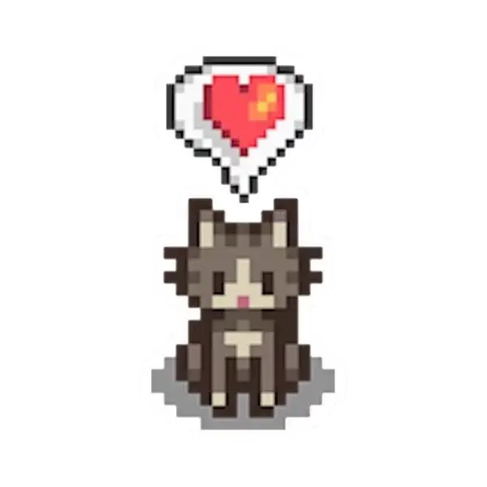

SOBRE MIM:
Minha trajetória não começou analisando métricas de performance, mas com agulha, linha e o sonho de infância de abrir um ateliê de costura. Ali, bem novinha, aprendi a lição mais valiosa que levo para o marketing: construir algo sob medida exige empatia, técnica e atenção aos mínimos detalhes.
Hoje, troquei os tecidos pelas estratégias digitais. Sou uma profissional de marketing focada em Growth, Copy e Experiência do Usuário. Uno a visão de negócios à base lógica do meu Técnico em Desenvolvimento de Sistemas para desenhar jornadas que realmente engajam. Uso os dados para guiar minhas decisões, mas uso a criatividade e as palavras para criar conexões reais.
Sou movida por uma curiosidade inegociável. Não estudo apenas para "ganhar pontos" em entrevistas, mas porque genuinamente adoro investigar o que me fascina — seja destrinchar uma nova plataforma de anúncios ou mergulhar em áreas que expandem minha visão de mundo, como o Tarot. Afinal, entender profundamente as pessoas é o coração de qualquer boa estratégia de comunicação.
Fora dos fluxogramas e relatórios, meu lado criativo continua a mil. Você provavelmente vai me encontrar imersa em algum jogo, soltando a voz e dançando pela casa, ou sendo aquela pessoa que para na rua só para dar atenção a todo gato e cachorro que cruza o caminho.
